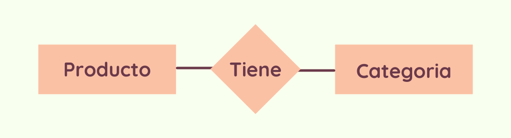

¿Qué es una base de datos?
En su forma más simple, es un archivo de registros o entidades, tal como un catálogo de tarjetas de biblioteca. Es persistente en el sentido que tanto sus entidades como las relaciones entre ellas son preservadas de un uso al siguiente.
Oracle define a las bases de datos como
Una base de datos es una recopilación organizada de información o datos estructurados, que normalmente se almacena de forma electrónica en un sistema informático. Normalmente, una base de datos está controlada por un sistema de gestión de bases de datos (DBMS). En conjunto, los datos y el DBMS, junto con las aplicaciones asociadas a ellos, reciben el nombre de sistema de bases de datos, abreviado normalmente a simplemente base de datos.

Lenguajes para Bases de Datos
También son llamados lenguajes de sistemas de datos o DLS (data system languages). Los DSL soportan a menudo dos sublenguajes: el lenguaje de definición de datos, o DDL (data definition language) y el lenguaje de manipulación de datos, o DML (data manipulation language)
El DDL es un lenguaje para describir los datos y sus relaciones en una base de datos. Se puede generar en un script de objetos de base de datos para:
- Mantener una instantánea de la estructura de base de datos
- COnfigurar un sistema de prueba donde la base de datos actúe como el sistema de producción, pero sin contener datos
- Producir plantillas para los nuevos objetos que se creen basándose en los existentes
Por su parte, el DML soporta (al menos) operaciones para examinar, insertar, eliminar y modificar datos. Además, a menudo el DML tiene un lenguaje de consulta, el cual es amigable con el usuario, orientado a la pantalla, interactivo y relativamente fácil de utilizar. Tanto el DDL pueden estar integrados en un lenguaje anfitrión, tal como Pascal (Pascal /R), COBOL (SQL) o FORTRAN (DL/I)
Niveles de abstracción
En el nivel más bajo está la vista física, que describe los discos o tambores físicos reales donde están almacenados los datos.
En el siguiente nivel superior está la vista de almacenamiento, que proporciona una estructura a los propios datos físicos.
El siguiente nivel de abstracción es la vista conceptual, que describe cómo se organizan los datos.
Finalmente, hay posiblemente varias vistas externas para una base de datos. Estas vistas son observadas y empleadas por el usuario, con frecuencia a través del lenguaje de consulta.
El modelo relacional
El modelo relacional proporcionó una forma estándar de representar y consultar datos que podía utilizarse en cualquier aplicación. Desde el principio, los desarrolladores se dieron cuenta de que la virtud principal del modelo de base de datos relacional era el uso de tablas, ya que era una forma intuitiva, eficiente y flexible de almacenar y acceder a información estructurada.
El modelo relacional define la implementación lógica de la información del negocio mediante una serie de tablas, campos, restricciones, relaciones entre las mismas, etc… que deben reflejar la semántica del negocio. Esta semántica es captada por el área TI y descrita en los sistemas de gestión de bases de datos,
SQL
SQL viene de las siglas Structured Query Language (Lenguaje de consulta Estructurado). Sus fundamentos son una combinación de álgebra y de cálculo relacionales. Su importancia radica en que ha sido estandarizado por el American National Standards Institute y la International Standards Organization
La publicación de un éstandar tiene muchas ventajas, ya que hace que las aplicaciones sean transportables de una máquina a otra y puedan utilizarse por mucho tiempo; los sistemas puedan comunicarse de uno a otro, y los clientes pueden elegir la versión completa o un subconjunto del mismo lenguaje, según sea necesario.

DDL en SQL
Como se ha mencionado, DDL (Data Definition Language) es el conjunto de instrucciones agrupadas en un lenguaje que nos permite definir las estructuras que almacenarán los datos así como los procedimientos y funciones que permitirán consultarlos.
Para definir las estructura en SQL existen tres sentencias:
- CREATE: se utiliza para crear una base de datos, una tabla, una vista, etc.
- ALTER: se utiliza para modificar la estructura, por ejemplo, añadir o borrar columnas de una tabla.
- DROP: con esta sentencia, se pueden eliminar objetos de la estructura, como pueden ser tablas.
DML en SQL
Como ya se mencionó, Data Manipulation Language (DML) se resume en el conjunto de instrucciones SQL que permite a los usuarios introducir datos para posteriormente realizar tareas de consultas o modificación de los datos que contienen las Bases de Datos.
Los elementos que se utilizan para manipular los datos en SQL son los siguientes:
- INSERT: inserta registros o filas en una tabla.
- SELECT: muestra iunformación sobre los datos almacenados en la base de datos, que puede pertenecer a una o varias tablas.
- UPDATE: Actualiza información de una tabla.
- DELETE: Borra registros o filas de una tabla.
Ejemplo
Para este ejemplo, imaginemos que somos dueños de una tienda que vende productos varios, y queremos llevar un registro de todos los productos que vendemos. Entonces tendremos que crear una tabla que registre los productos, por ejemplo:
| Producto | Precio | Cantidad en stock |
|---|---|---|
| Galletas | $15 | 10 |
| Ligas para el cabello | $10 | 5 |
| Audifonos | $30 | 12 |
Ahora imaginemos que también deseamos llevar un registro de las categorías de productos que vendemos
| Categoria |
|---|
| Abarrotes |
| Belleza |
| electrónica |
En un modelo relacional, se puede ver gráficamente el ejemplo descrito anteriormente en un diagrama llamado Entidad-Relación, de la siguiente manera
El diagrama es simple, los rectangulos representan todas aquellas Entidades que forman parte del negocio que se está modelando, mientras que el rombo representa la Relación que existe entre las entidades. En este caso, el diagrama se puede leer como que la entidad Producto tiene una Categoría.
A partir de este diagrama, se puede diseñar una base de datos:
- Se crea la base de datos
- Se crea una tabla llamada Producto, con los campos que se quieran guardar
- Se crea una tabla llamada Categoria, con sus respectivos campos
- Se crea una tercera tabla Tiene que servirá para relacionar los registros de ambas tablas
| Producto | Categoria |
|---|---|
| Galletas | Abarrotes |
| Ligas para el cabello | Belleza |
| Audifonos | Electrónica |
Nota: Los campos de la tabla Tiene deben ser identificadores únicos de las tablas que está relacionando. En este caso, la tabla podría formarse con el campo "Producto" de la tabla Producto y el campo "Categoria" de la clase categoria, pero también podria agregarse un campo adicional a ambas tablas que funcione como un ID único. De manera que las tablas quedarín de la siguiente manera.
Tabla Producto
| ID del producto | Producto | Precio | Cantidad en stock |
|---|---|---|---|
| PROD1 | Galletas | $15 | 10 |
| PROD2 | Ligas para el cabello | $10 | 5 |
| PROD3 | Audifonos | $30 | 12 |
Tabla Categoria
| ID de categoria | Categoria |
|---|---|
| CAT1 | Abarrotes |
| CAT2 | Belleza |
| CAT3 | Electrónica |
Tabla Tiene
| ID de producto | ID de categoria |
|---|---|
| PROD1 | CAT1 |
| PROD2 | CAT2 |
| PROD3 | CAT3 |
Es posible que sea menos intuitiva la tabla Tiene, pero cuando se tienen grandes cantidades de datos es mejor organizarlo de esta manera para que no existan errores o referencias erróneas